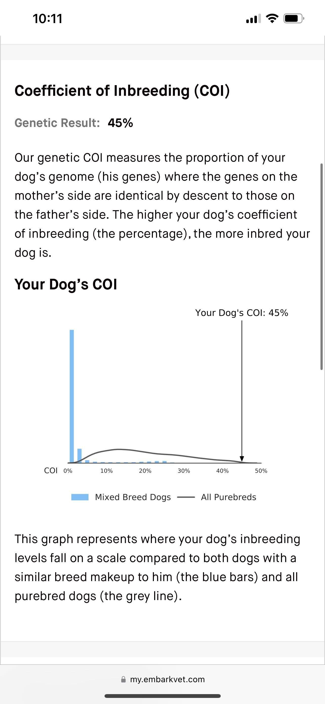

My pet dog is a golden retriever named Max. He is 3 years old and loves to play fetch and go for long walks. Max is very friendly and loves to meet new people. He is always wagging his tail and ready for a belly rub!
Norman is in good health and has all of his vaccinations up to date. He eats a high-quality dog food and gets plenty of exercise. However Norman has a Coefficient of Inbreeding of 45% which the vet says means his parents were siblings.
If you are interested in adopting or fostering Max, please contact me at:
Email: max@example.com
Phone: 555-555-5555